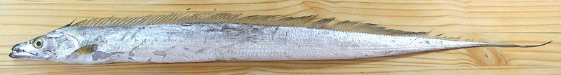

Beltfish

[Largehead Hairtail (FishBase), Ribbonfish, Cutlassfish, Scabbardfish;
Kalchi (Korea, lit. "Sword fish"); Tachiuo (Japan, lit. "Sword fish");
Peixe-espada (Brazil, Portugal, lit "Sword fish");
Trichiurus lepturus]
This fish is found worldwide in tropical and temperate waters, usually
not far from the coast. It can grow to over 7-1/2 feet long and 11
pounds, but the photo specimen was a mere 34-1/2 inches long, weighing
1 pound 3/4 ounce. This is a highly commercial fish, primarily for Asian
markets, so it is very common here in Los Angeles. It is also popular
in Brazil, Portugal, Italy and Pakistan. Beltfish have no scales and
make no effort whatever to be kosher.
Espada
 Beltfish is one of the many small fish that are salted and dried in the
Philippines, categorically called
"Daing". The larger of the photo
specimens was 19-1/4 inches long and weighted 1-1/2 ounces. It was
purchased from a Philippine market in Los Angeles for 2016 US $2.99 for
3-5/8 ounces, or $13.20 / pound.
Beltfish is one of the many small fish that are salted and dried in the
Philippines, categorically called
"Daing". The larger of the photo
specimens was 19-1/4 inches long and weighted 1-1/2 ounces. It was
purchased from a Philippine market in Los Angeles for 2016 US $2.99 for
3-5/8 ounces, or $13.20 / pound.
More on Varieties of Fish
(very large page).
Beltfish is popular for grilling, pan frying, deep frying and stir
frying - all dry, high heat, short cooking time methods, because it
becomes mushy with long or wet cooking. The flesh is medium flavored and
low in oil. It may be cooked as fillets, or as cut sections of the fish
to be deboned on the plate.
In Japan it is also eaten raw as sushi or sashimi, usually
served with ponzu rather than soy sauce. It may be lightly grilled so
it has a crust but is still raw inside.
Another popular method is to make fillets into rolls. For this,
fillets are cut to about 2 inch lengths, rolled around a filling and
pined with toothpicks to keep skin shrink from unrolling them. The
filling must then jell to hold it together because the skin will quickly
soften.
In India, Indonesia, Philippines and some Pacific islands, this fish
is usually salted and sun dried, after which it may be used in curries.
Buying:
Beltfish can be found in just about any of the
Asian fish markets here in Southern California, both whole on ice, and
in the frozen cases cleaned and cut to size for rolls. The photo specimen
was purchased from a Philippine market in Los Angeles (Eagle Rock,
actually) for 2016 US $3.99 / pound.
Filleting:
This might seem a bit daunting for a fish over
three feet long, but it's not that hard. Note:
Because of its shape, this fish finds it hard to stay upright, so you may
find a few bony counter weights along the bottom of the fish.
These are normal.
- Make a cut from the vent (near the middle of the fish) all the way
up under the jaw. Remove all the innards and membranes, and scrape out
the blood works between the swim bladder and backbone.
- Remove the head with the usual cuts around the collar and cut the
backbone with kitchen shears.
- Outline your fillet with shallow cuts through the skin all along the
top, and from tail to body cavity on each side of the anal fin, which is
reduced to just a stiff ridge on this fish.
- Starting at the head end use your filleting knife to cut down to the
backbone all the way to the tail carefully following the fins and bones.
You may find it better to do this in a couple passes.
- Dip over the backbone at the tail and follow the bones to the end of
the body cavity, meeting the shallow cut you made at the bottom.
- Starting from the head end dip over the backbone and follow the ribs
on down (they rake sharply aft). Don't try to pull the fillet off the
ribs, you'll lose flesh. For fish smaller than 3 feet this may not work
perfectly.
- Once the fillet is free, check it for any ribs or partial ribs, pull
off any remaining membranes and rinse.
- Do not attempt to remove the skin - it's what's holding the
fillet together.
Yield:
A 1 pound 3/4 ounce fish yielded 9-1/8 ounces
of fillet (54%), but smaller fish will yield a slightly lower percentage.
Skin:
The skin shrinks significantly but is weak and
quickly softens.
Stock:
Stock made from beltfish heads and bones is rather
"fishy" and I don't recommend it.
sf_beltz* 05 rev 160110 - www.clovegarden.com
©Andrew Grygus - agryg@clovegarden.com - Photos
on this page not otherwise credited © cg1
- Linking to and non-commercial use of this page permitted